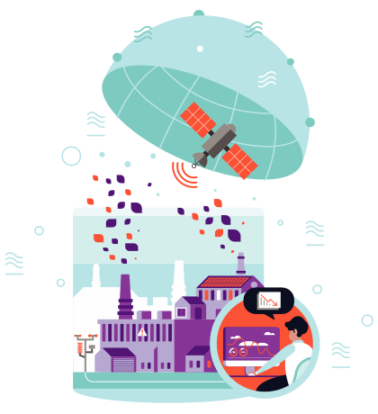
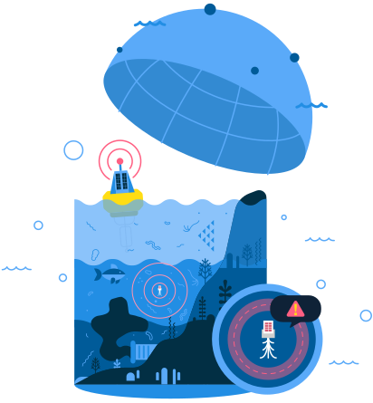

Raphael Koch
Can we save the planet with AI?
Is AI the solution?

The Challenges
Focus of the presenation
- Climate change
- Biodiversity and conservation
- Healthy oceans
- Water security
- Clean air
- Weather and disaster resilience
Climate change
- Clean power
- Smart transport options
- Sustainable production and consumption
- Sustainable land-use
- Smart cities and homes
Biodiversity and conservation
- Habitat protection and restoration
- Sustainable trade
- Pollution control
Healthy oceans
- Fishing sustainably
- Preventing pollution
- Protecting habitats
- Protecting species
- Impacts from climate change (including acidifaction)

Water security
- Water supply
- Catchment control
- Water efficiency
- Adequate sanitation
- Drought planning

{kind=link}
Clean air
- Filtering and capture
- Monitoring and prevention
- Early warning
- Clean fuels
- Real-time, integrated, adaptive urban management

Weather and disaster resilience
- Prediction and forecasting
- Early warning systems
- Resilient infrastructure
- Resilience planning
Implementation
Drawbacks
Data


Risks
- Performance risks
- Security risks
- Control risks
- Ethical risks
- Economic risks
- Societal risks